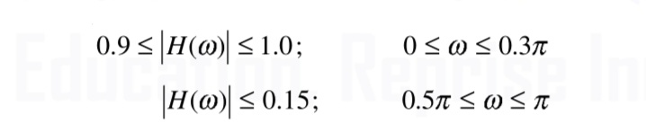
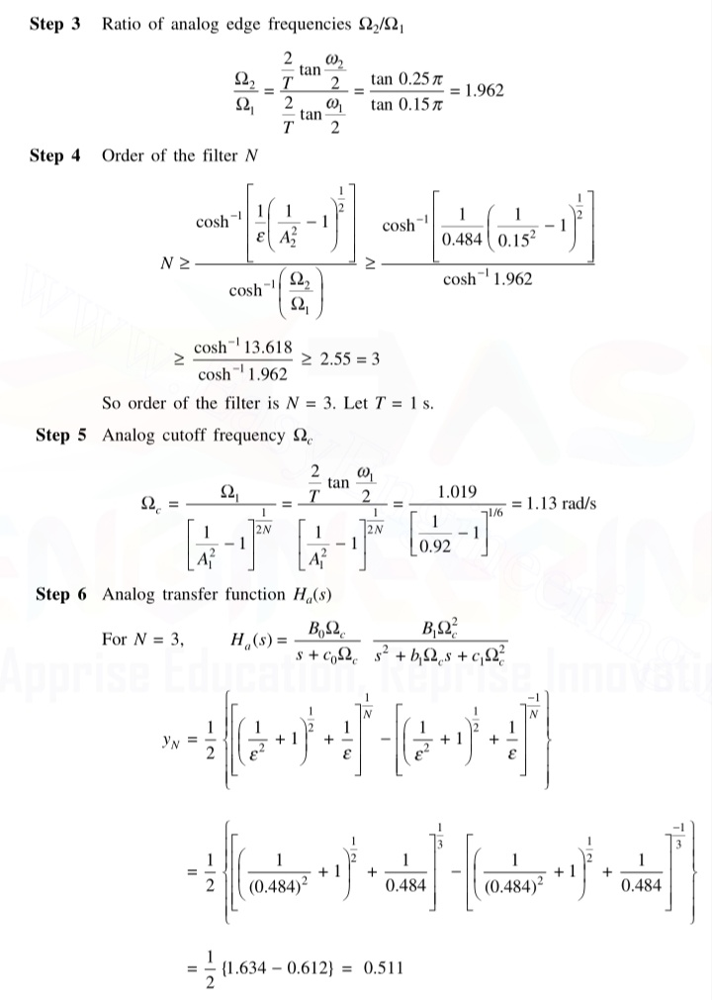

DESIGN OF LOW-PASS CHEBYSHEV FILTER
step 1:choose the type of transformation
step 2:Calculate the attenuation constant
step 3:calculate the ratio of analog frequencies
step 4:Decide the order of filter N such that

step 5:Calculate the analog frequency

step 6:Determine the analog transfer function which is given by
When N is odd, H(s) is given by
where,
step 7:Using chosen transformation, the digital transfer function is determined
Example 1
The specifications of the desired low pass filter is

Design a Chebyshev digital filter using bilinear transformation

